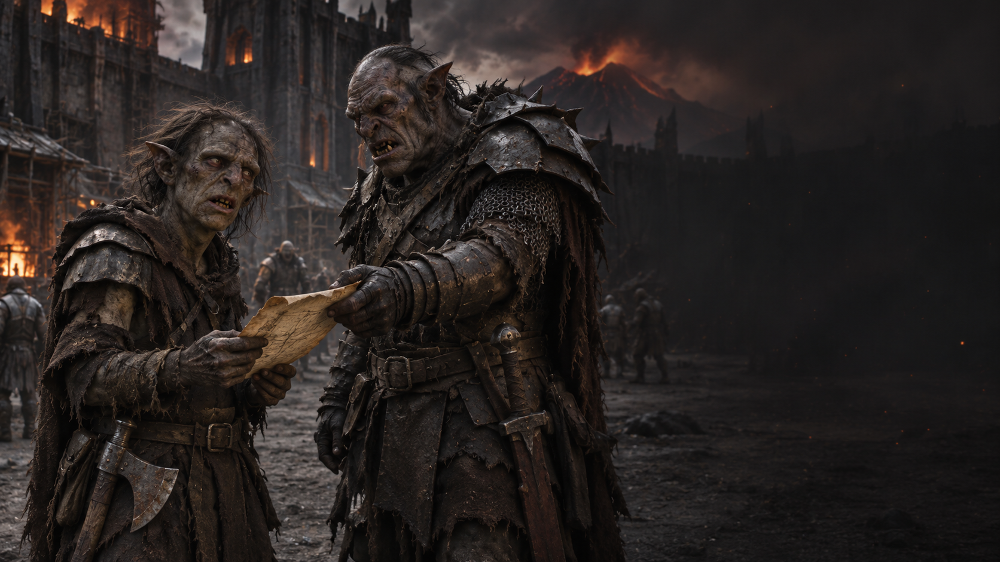

Chapitre II · Aux frontières du Mordor
La Porte Noire
Derrière vous, les ordres. Devant vous, les ennuis.
Choisir mon cheminLe premier choix
Les lourds battants de la Porte Noire s’ouvrent dans un grincement assourdissant. Un garde examine votre parchemin, puis vous laisse passer avec un sourire beaucoup trop satisfait.
« Gollum ? On raconte qu’une petite chose affamée traîne vers les marais. Ou près des bois. Enfin… quelque part dehors. Bonne chasse ! »
Une fois la porte refermée, deux chemins s’offrent à vous. À gauche, une brume épaisse recouvre les Marais des Morts. Dans la boue, vous distinguez de petites empreintes de pieds nus.
À droite, un sentier longe les rochers avant de rejoindre une lisière boisée. Une branche basse porte un morceau de tissu sale. Quelque chose est passé par là aussi.
Deux pistes, aucune ration supplémentaire. Une opération parfaitement organisée.